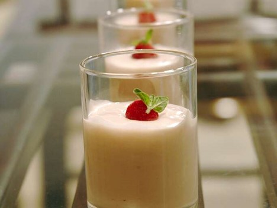

Raspberry White Chocolate Mousse

Ingredients
(10 ounce) package frozen raspberries, thawed
2 tablespoons white sugar
2 tablespoons orange liqueur
1 ¾ cups heavy whipping cream, divided
6 ounces white chocolate chips
1 drop red food coloring
Directions
Step 1
Process berries in a blender or food processor until smooth. Strain mixture into a
small bowl and discard seeds. Add sugar and liqueur; stir until sugar dissolves.
Makes 1 cup raspberry sauce.
Step 2
Warm 1/4 cup cream and white chocolate in a heavy saucepan over low heat, stirring constantly,
until chocolate melts; let mixture cool until lukewarm. Stir in 1 tablespoon raspberry sauce and food coloring.
Transfer to a large bowl.
Step 3
Beat 1 1/2 cups cream in a chilled glass or metal bowl with an electric mixer until soft peaks form;
fold into melted chocolate mixture, 1/3 at a time, until no streaks remain.
Step 4
Layer into parfait dishes and serve with remaining raspberry sauce.